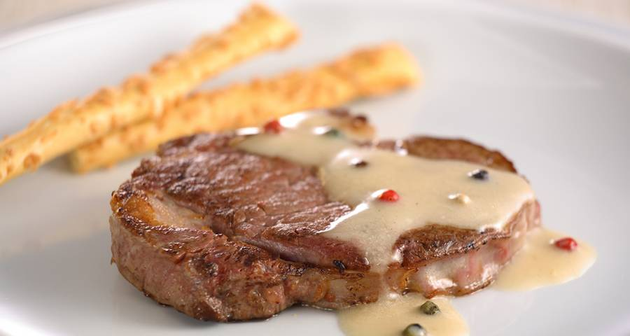
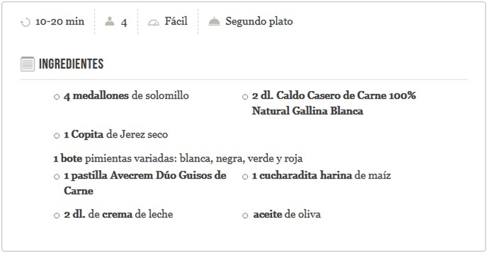
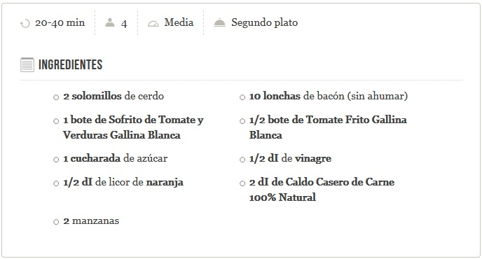
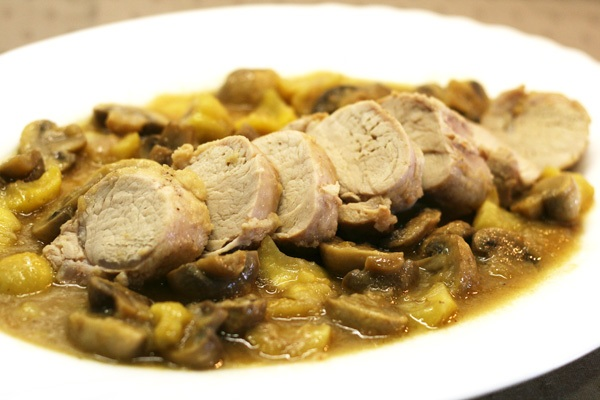
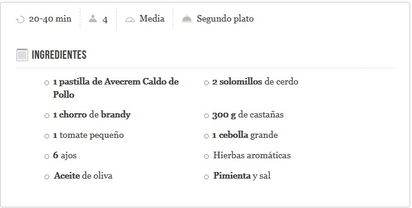

-
Solomillo a las cuatro pimientas 
Paso 1
Limpia el solomillo de nervios y grasa. Sazónalo con una pastilla de Avecrem Dúo Guisos de Carne. Dóralo al fuego con un poco de aceite de olivaPaso 2
Retira la carne y reserva al calor, desglasa (raspar para retirar lo que queda pegado en el fondo) la sartén con el Jerez y despega bien los restos de carne.Paso 3
Añade el Caldo Casero de Carne 100% Natural Gallina Blanca y la harina de maíz diluida en un poco de agua fría. Después, cuécelo hasta que espese. Pásalo por el chino y añade la crema de leche y las pimientas de colores (al gusto), deja cocer 5 min. Sirve el solomillo bañado con la salsa. -
Solomillo agridulce
Paso 1
Saltea el sofrito de hortalizas y añade el Tomate Frito Gallina Blanca para que se unan los sabores. Condimenta los solomillos con el Avecrem y la pimienta y envuélvelos con el bacón. O bien los puedes abrir y rellenar con el bacón y atarlos con hilo de cocina.Paso 2
Coloca los solomillos en una fuente de horno con las hortalizas como base y ásalos a 200 °C. unos 10 minutos. Saca y riega con el Caldo Casero de Carne 100% Natural.Paso 3
SALSA: Haz un caramelo con el azúcar y el vinagre. Añade el licor de naranja y deja evaporar. Vierte sobre los solomillos y termina de cocer unos 12-15 minutos según tamaño de los solomillos. Pasa la salsa por el chino y sírvelo caliente.Paso 4
Acompaña los solomillos con flanes de manzana. Para elaborarlos untar unos moldes para microondas con un poco de mantequilla y espolvoréalos de azúcar. Pon capas de láminas de manzana alternando con mantequilla y azúcar y espolvorea con pimienta hasta llenar el molde. Cocínalos en el microondas durante 3 minutos a máxima potencia. -
Solomillo de cerdo con castañas 
Paso 1
Practica un corte a las castañas y ponlas a hervir en agua. Cuando estén cocidas pélalas y resérvalas.Paso 2
Salpimienta los solomillos y añádelos en una cazuela con las hierbas. Deja rustir a fuego vivo.Paso 3
Mientras, pela y corta a trozos regulares los ajos, la cebolla y los tomates. Añádelos a la cazuela por este orden.Paso 4
Cuando estén las verduras un poco cocinadas, añade un chorro de brandy, deja reducir el alcohol. Agrega las castañas, cubre con el agua, añade la pastilla de Avecrem y deja cocer hasta que las castañas estén blandas. Apaga el fuego. Reduce la salsa si fuera necesario. Sirve la carne cortada a lonchas con la salsa y las castañas como guarnición.